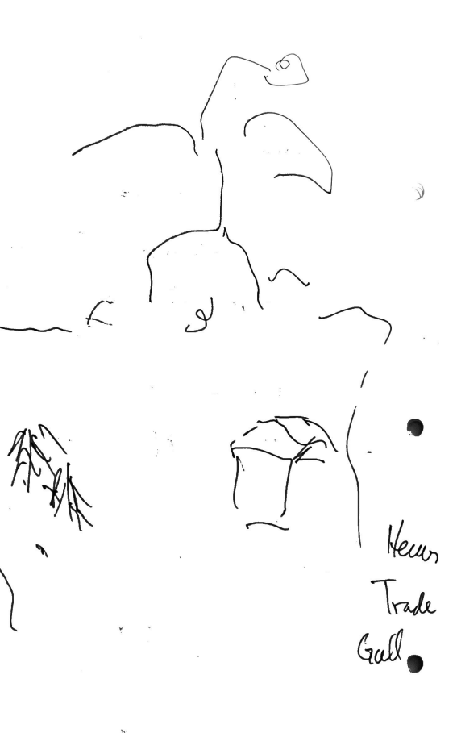
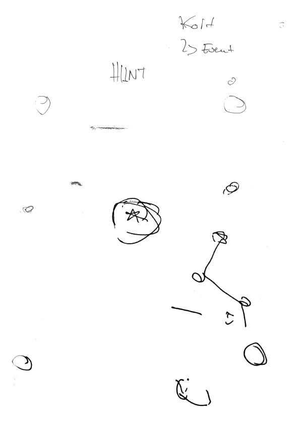
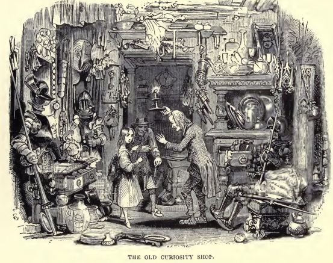

Spilldesign
Denne nettsiden er for Spilldesign Gruppe 6. Vår 2024. Det er viktig at gruppen møtes, planlegger fremdrift og gjør ting. Alle på gruppen må jobbe på oppgaver.
Rom: 211 map
Tid: 9:15 - 16:00
- Herman Ibsen Aursø
- Alan Whitburn Haugen
- Thomas Carlsen
- Marthe Emilie Berg
- Celina Gammelsæter
- Nicholas Norgård
Brettspillet skal designes for Tabletop Simulator og deretter lages fysisk med 3D-printing.
Fantasy RPG Brettspillet
Drepe drage

Hooks
- Eventyrspill med kul setting
- Store risks: Velg når du vil drepe dragen. Siste Hit på dragen er vinneren
- Velg en klasse og sett deg inn i en rolle
- Finn rustning og våpen i en eventyrverden
- Vær på lag eller gå alene
Regler
- Drep dragen: Den siste til å slå dragen når den dør er den som vinner
- Team up:
- Bedrageri:
- Finn loot: Brettverdenen utnyttes til å finne bedre loot
- Valg av klasse: Før en starter, velg druid, cleric, etc.
- Combat: Sloss mot fiender eller dragen
- Terninger og tilfeldighet: Kast terninger (for combat? andre steder?)
- Kort: Få kort for items, kort kan også representere fiender. Event kort?
Todo:
- Tegn dragen
- Tegn brettet
- Tegn coveret av brettet
- Design character cards (må ha antall liv og penger på seg, og en måte å indikere hvor mye av dette en spiller har igjen). Hvilke stats skal en spiller ha?
- Design klassene i spillet (cleric, druid, etc.)
- Lag kort for loot
- Bestem terninger for spillet
- Design kort for items
- Design kort for fiender en kan møte
- Skal spillet ha events?
Finn Diamanten
Hunger Games
->treasure i midten

Regler
- Begynner på hver ende: Møter hverandre
- Kaster terning: Gå etter terningsøyne
- Trekke kort: Få utfordringer
- Kom i midten og ta "tingen": Eller sloss den osm har tingen
- Ta tingen tilbake til din base
Todo:
- Bestem hva "tingen" er: En stjerne? En skatt?
- Tegn brettet
- Tegn coveret av brettet
- Bestem terninger for spillet
- Design kort for utfordringer
- Hvordan fungerer slossingen?
- Hvilke hooks har spillet?
The Old Curiosity Shop
Charles Dickens 1840 gutenberg.org

Hooks
- Kulturell setting, satt til viktorianske england rundt år 1825.
- Spill som Quilp eller Nell, rene djevelen eller en uskyldig jente, eventuelt som en av deres hjelpere
- Nell rømmer med eiendeler hun har fra The Old Curiosity Shop (som Quilp mener han har eierskap over), og ønsker å komme seg en ny landsby uten å dø på veien
- Quilp ønsker å få tilbake det som han mener han har fått frastjålet, samt gjøre Nell til hans kone
Regler
- Nell begynner spillet med et par runder forsprang: Quilt og Nell starter i The Old Curiosity shop.
- Kaster terning: Gå etter terningsøyne
- Items: Fra the old curiosity shop. Potions, mekaniske ting, etc.
- Nell er etterlyst av Quilp og må unngå enkelte steder
- Ha et tivoli i midten av brettet (Her forsøker tivolimenneskene å hjelpe Quilp, de ønsker en belønning)
- Mot slutten av spillet så blir Quilp etterlyst av politiet (han er en usurer, som er ulovlig) og må unngå å havne i fengsel
Todo:
- Tegn brettet (The Old Curiosity shop i ett hjørne, et tivoli i midten, ny landsby i den andre.)
- Bestem hvilke karakterer til å ta med. Se på persongalleriet her: wikipedia.org
- Dag og natt system?